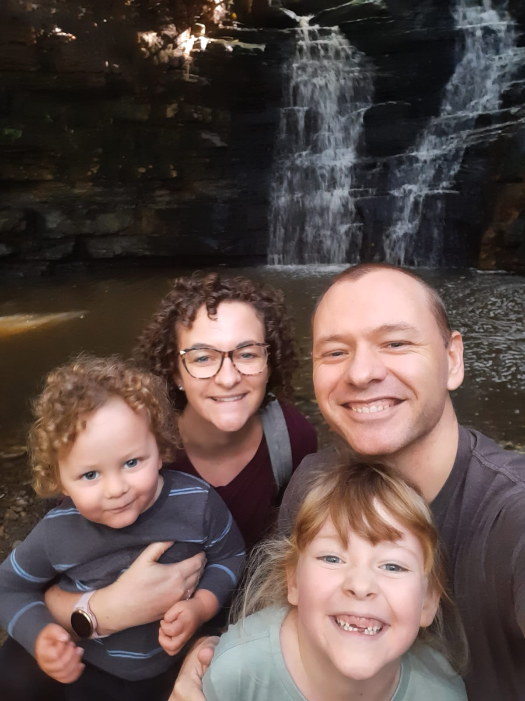

About Me
I'm Jaco, a senior software engineer with more than 14 years across product development, distributed systems, infrastructure, platform engineering, and applied AI.
TypeScript is my strongest current language, but my work is primarily concerned with systems: architecture, security, reliability, observability, and making safe changes across unfamiliar technologies. I increasingly use AI agents to produce implementation while remaining accountable for the design, verification, and production behaviour.
I'm also a follower of Jesus, a father, a husband, and a creative maker who builds indie games for the joy of it.

What Drives Me
My work is grounded in a conviction that building well is an act of stewardship. I follow Jesus, and that shapes how I approach craft, people, and purpose.